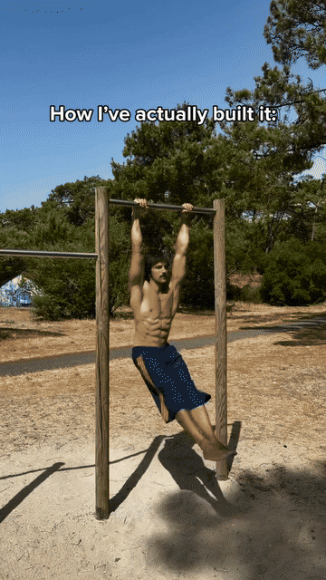
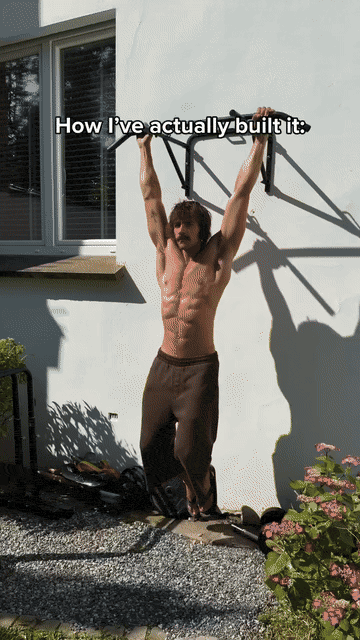
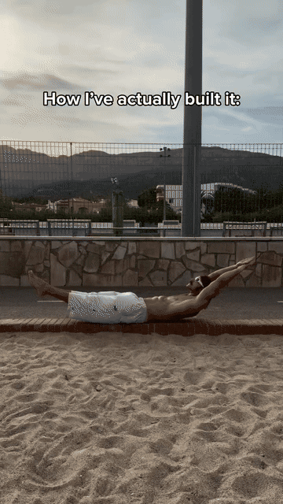
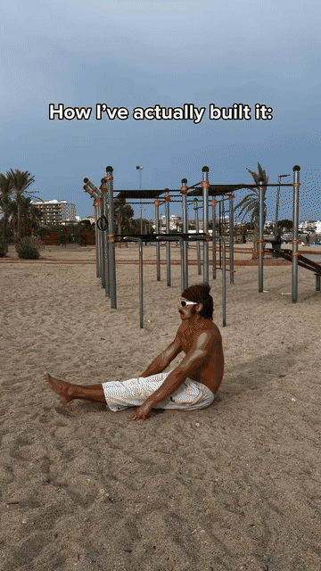
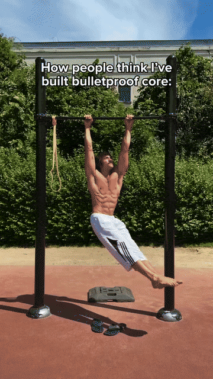

Everything starts from the hang. A dead hang decompresses the spine and builds the grip and shoulder stability every later hold is built on — then you make it an active hang by pulling the shoulder blades down and back.

The reel's real core builder: knees to the chest while hanging — the movement you can already do before any lever. It trains the abs to lift the pelvis, not just crunch the spine.

The strongest core drill in the reel, done on nothing but a low ledge: the whole body held in one straight line with only the upper back on the ledge. This is the exact strength behind a dragon flag.

No bar, no ledge, just floor: sit, lean back on the hands and lift both straight legs. This is the entry point to the L-sit and the V-sit — and the reason the sand version in the reel looks easy.

This half of the reel is what everyone *thinks* built the core. These holds are the result of the four basics above — they are the same positions with longer levers and harder leverage.